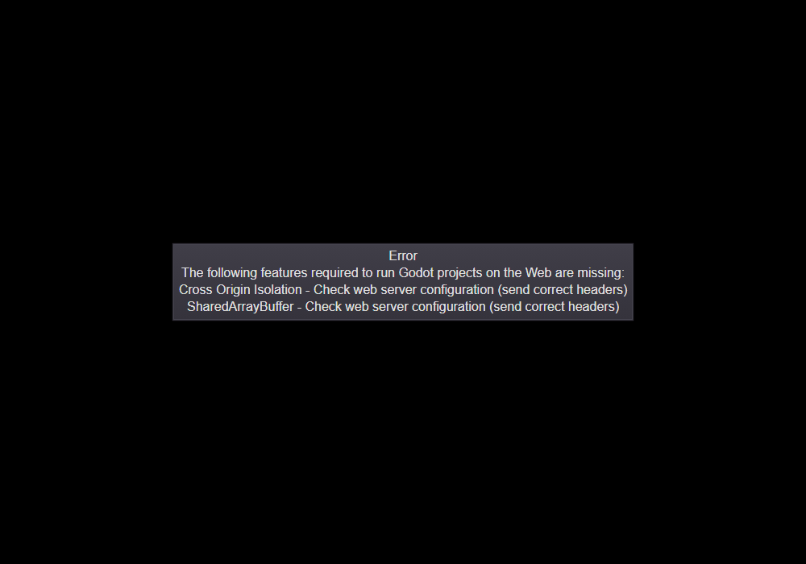
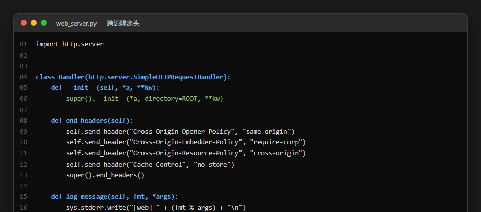
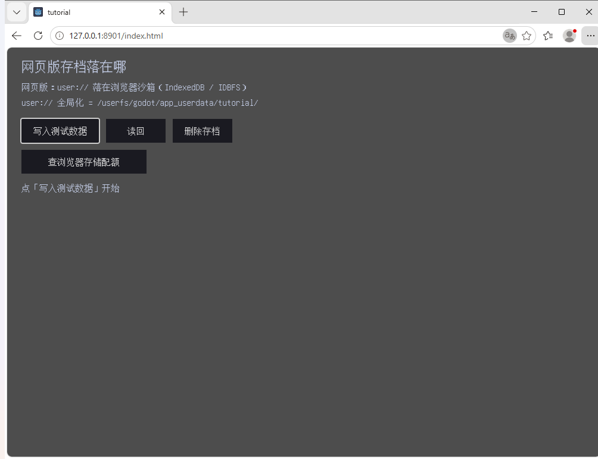
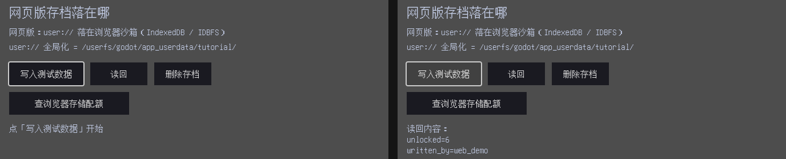
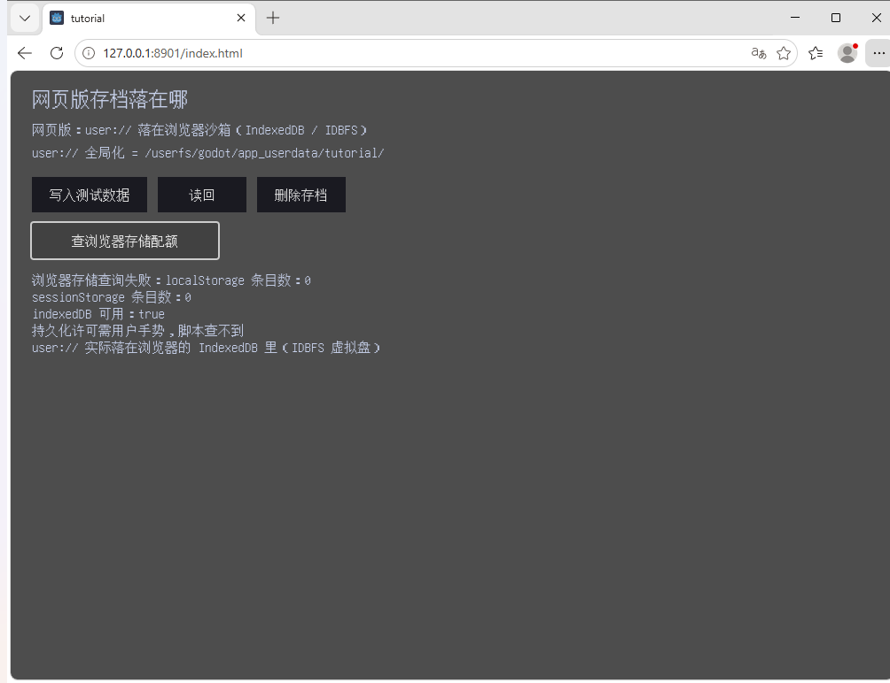
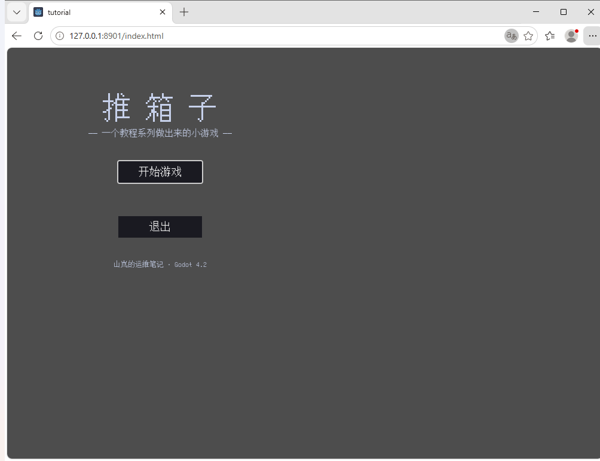

大家好，我是「山岚的运维笔记」。
上一篇把游戏变成了 exe，双击即玩。但唔系个个都用 Windows，更唔系个个都愿意下载一个几十兆嘅文件。
呢一篇将佢塞入浏览器——打开网址就玩得，跨平台，仲唔使装任何嘢。
桌面版导出得到 exe 加 pck 两个文件，网页版导出一整个目录，九个文件。核心三个：index.html 是页面外壳，index.wasm 是引擎运行时（35MB），index.pck 是你的工程资源。剩下的是 worker、图标之类的配套。
有个区别必须记住：桌面版双击 exe 就跑，网页版必须挂在 HTTP 服务器上。直接双击 index.html？浏览器会用 file:// 协议加载 wasm，那是不安全的上下文，直接失败。
我第一次导完，打开浏览器一片黑，报错框写住：跑 Godot 网页版需要嘅功能缺失——Cross Origin Isolation、SharedArrayBuffer，请检查 web 服务器配置。
这不是 bug，是 Godot 4.2 的网页版默认要 SharedArrayBuffer——一个多线程共享内存 API，不用怀疑自己工程有问题。浏览器为了安全，只在页面处于跨源隔离状态时才开放它。
要进入跨源隔离，服务器必须发两个响应头：
Cross-Origin-Opener-Policy: same-origin Cross-Origin-Embedder-Policy: require-corp
一个管窗口隔离，一个管资源嵌入策略。Python 起本地服务器就两行代码的事，Nginx 线上也就是加两个 add_header。


顺手讲句：Godot 4.2 嘅导出预设里有个线程支持选项，熄咗佢就唔需要 SharedArrayBuffer，连呢两个头都唔使配。代价是多线程用不了，大型项目会有点吃亏。小游戏图省事可以关，要性能就老老实实配服务器。
跨源隔离配好，游戏跑起身——但界面一片豆腐块，「推箱子」三个字变咗三个方框。
原因很简单：桌面版 Godot 能调用系统字体，网页版不行。浏览器沙箱里没有系统字体可借，引擎只能用内置字体渲染，而内置字体不含中文字形。
解法是自己带一份。找一份可再分发的中文字体放进工程，这一步就搞定了，我用的是 GNU Unifont，12MB。然后建个主题把字体设成默认，再在项目配置里挂上。
打包后 pck 从 108KB 涨到 4.4MB——字体只占实际用到的那点字形，引擎做的是动态子集化，不是整个字体塞进去。想更小就换更精简的字体，或者自己裁字形。
跟桌面版一个套路，在预设文件里加一个 Web 平台的预设，命令行改预设名和输出路径就行。
有个选项必须开：画布自适应策略设成"自适应"，浏览器窗口缩放画布跟着缩，网页版不开这个就是灾难。另一个：页面打开时焦点直接落在画布上，键盘立刻能操作。不开的话玩家得先点一下鼠标才能用键盘——这是网页游戏第一大劝退点，我见过太多人在这第一步就走了。
呢个先系本篇真正想讲嘅。回到第 20 篇那个伏笔——便携模式要导出的 exe 才能走到第三关，网页版为什么必然回退？
答案在这个演示页里。user:// 全局化之后是这么一串：/userfs/godot/app_userdata/tutorial/
/userfs/ 这个前缀就是答案。桌面版的 user:// 是磁盘上真实的一个文件夹，Windows 上在 AppData 里，你能在文件管理器里翻到它。网页版的 user:// 是一套虚拟文件系统——Godot 4.2 用 IndexedDB 加 IDBFS 在浏览器里模拟了一个 POSIX 风格的盘，路径长得像磁盘路径，实际上数据躺在浏览器的 IndexedDB 里。
写入同读回照常工作，API 一行都唔使改。这就是"回退模式"的真正含义：网页版没有"exe 同级目录"这回事，你没法往浏览器里写一个文件夹出来，所以那套裁决逻辑在网页版直接走第二关返回 user://，一点不亏心。



不过有几个坑你一定要知，唔好中招：
清咗浏览器缓存，存档就即刻冇。桌面版玩家删了游戏文件夹才会丢档，网页版玩家在设置里点"清除浏览数据"，进度就没了，IndexedDB 会被一起清掉。正式发布最好加个云存档兜底。
换浏览器就是另一个存档。Chrome 存的进度 Firefox 看不到，IndexedDB 是按源隔离的。
无痕窗口是临时存档，窗口一关 IndexedDB 跟着没。
隐私模式或存储受限时，写入可能直接失败。所以网页版嘅写入路径一定要判空、俾提示，唔可以静静鸡吞咗佢。
一切就绪，浏览器打开，跨源隔离头到位，中文字体到位。

工程里的字体是 Unifont，笔画是点阵风格，略显朴素——但对"证明网页版能跑"这件事足够了。换成思源黑体之类的观感会好很多，代价是字体文件更大。
关键词：跨源隔离、SharedArrayBuffer、Web 预设、IndexedDB。
桌面版导出的心智模型是"一个 exe 加一个包"，网页版是"一个目录加两个响应头"。后者多出来的不是技术难度，是浏览器安全策略的账——高性能 API 必须在隔离环境里才给用，隔离就得有头，头就得服务器配。
存档这块最值得记住：同一套代码，不同平台两套存储。桌面版的 user:// 是文件夹，网页版的 user:// 是 IndexedDB 里的虚拟盘，API 一样，脾气完全不同。
下篇讲发布——把 exe 和网页版打包传到 GitHub Release，让别人能下载能玩。
游戏可以喺浏览器里跑喇，值得点赞、在看嚟一套；想睇佢点样发到网上俾陌生人下载嘅，关注「山岚的运维笔记」，下一篇接着。评论区有问必回。